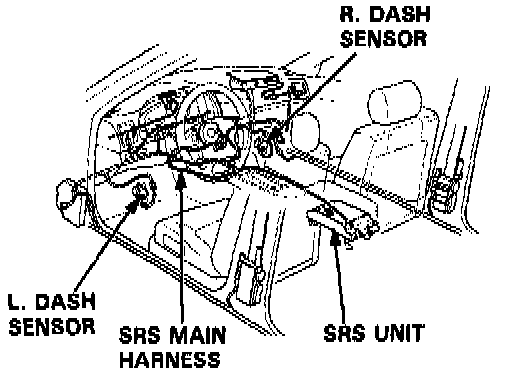
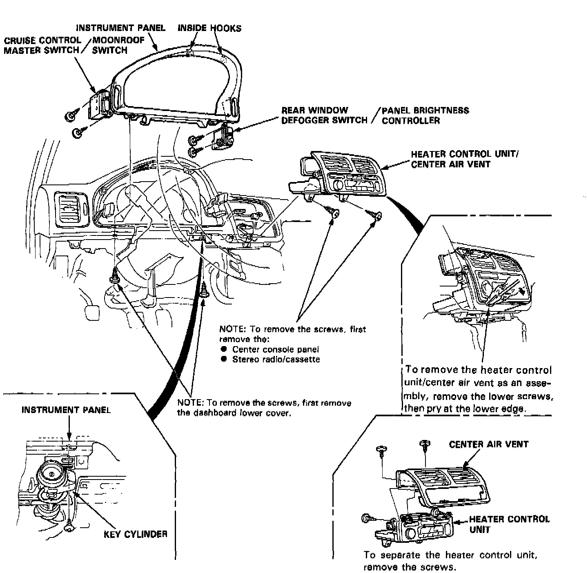
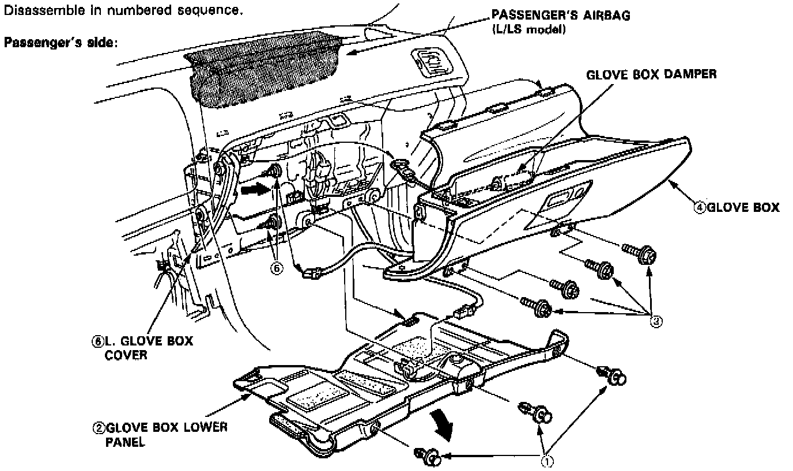
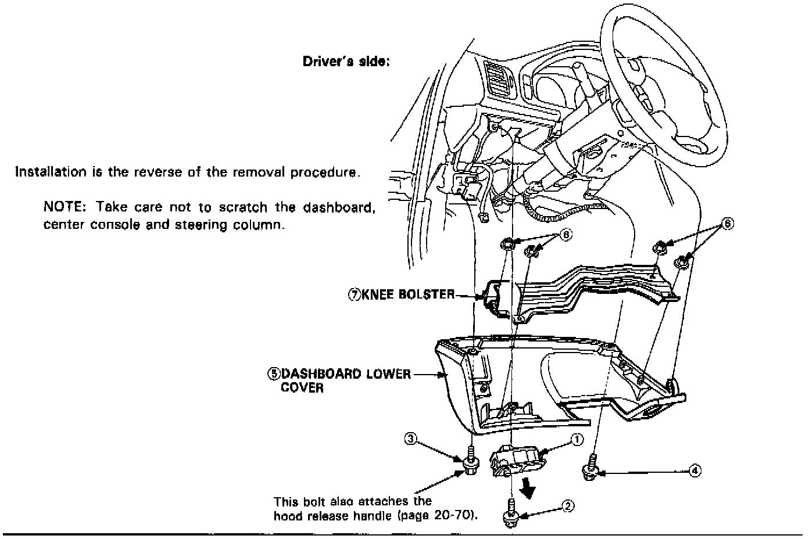
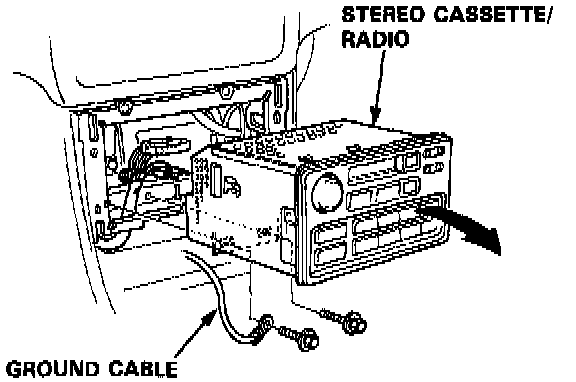

Dash Component Removal and Installation

SRS wire harnesses are routed near the steering column and passenger's side dashboard.
CAUTION:
- All SRS wiring harnesses are covered with yellow outer insulation.
- Before disconnecting any part of the SRS wire harness, install the short connectors.
- Replace the entire affected SRS harness assembly if it has an open circuit or damaged wiring.
DASH COMPONENT REMOVAL/INSTALLATION
NOTE:
- Take care not to scratch the dashboard and steering column.
- When prying with a flat tip screwdriver, wrap it with protective tape to prevent damage.

1. To remove the instrument panel:
- Refer to image for removal details.
- Remove the dashboard lower cover.
- Remove the lower screws.
- Disengage the hooks.

Refer to image for removal sequence of glove box lower panel and glove box.

Refer to image for removal of dashboard lower cover.
STEREO RADIO/CASSETTE REPLACEMENT
NOTE (L and LS models): These versions have a stereo radio/cassette player with a 5-digit coded theft protection circuit. Be sure to get the code number before:
-disconnecting the battery.
- removing the No. 56 (7.5 A) fuse.
- removing the radio.
After reconnecting power and turning the radio ON, the word "CODE" will be displayed. Then enter the code.
1. Remove the center console panel.
2. Remove the 2 mounting bolts, then disconnect the ground cable. Remove the stereo radio/cassette by pulling it Out of the console.
NOTE:
- Do not drop the bolts inside the dashboard.
- Take care not to scratch the console and dashboard.
- When prying with a flat tip screwdriver, wrap it with protective tape to prevent damage.
3. Disconnect the connectors.

4. Installation is the reverse of the removal procedure.
NOTE: Before tightening the mounting bolts, make sure the harnesses are not pinched.